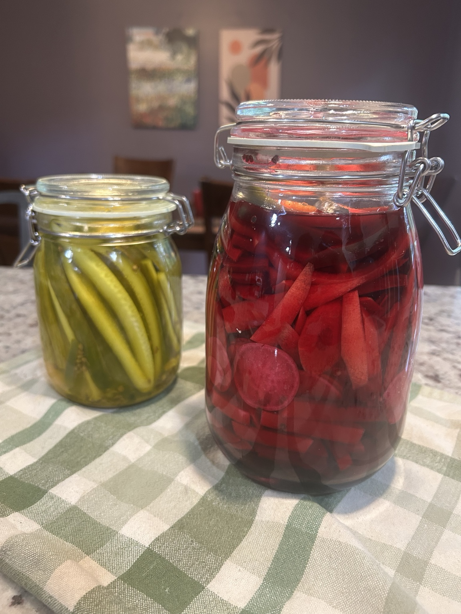

Condiment / Side
Shawarma Pickles
One brine, many jars: vivid pink turnips, crisp cucumber spears, and whichever spices suit the mood. A sharp, crunchy companion to shawarma, falafel, hummus and grilled meats.

Brine
- 250 ml vinegar (5% acidity)
- 250 ml water
- 1 tbsp salt
- 1 tbsp sugar
Vegetables
- Turnips, cut into sticks, with a few beetroot slices for colour
- Small cucumbers, deseeded, cut lengthwise into spears
- Or carrots, radishes, cauliflower and other crisp vegetables
Spices — choose your direction
- A few whole cloves
- 1/2–1 tsp coriander seeds
- 1–2 bay leaves
- 1/2 tsp turmeric for cucumbers, or cauliflower
- A few garlic cloves
- Fresh chilli (e.g. jalapeño works great), deseeded, cut into spears or rounds
- Optional: black peppercorns, mustard seeds, allspice
Method
- Wash the vegetables and cut them into sticks, wedges or spears. Pack them fairly tightly into clean jars. For pink turnips, add a few pieces of beetroot to the jar.
- Combine the vinegar, water, salt and sugar in a saucepan. Warm gently and stir until the salt and sugar dissolve. Add your chosen spices and briefly heat to release their aroma.
- Pour the brine over the vegetables, ensuring they are fully submerged. Let cool, cover and refrigerate.
- Taste after 24 hours. The pickles improve after 2–3 days, when the turnips have taken on their bright pink colour and the cucumber spears have absorbed the spices.
Notes
The simple 1:1 vinegar-to-water brine is the constant; everything else can vary. Turnip with beetroot gives the familiar vivid pink shawarma pickle, while cucumber stays green and crunchy. Cloves and coriander add warmth, bay leaves a savoury note, and fresh chilli whatever heat you want.
These are quick refrigerator pickles, not shelf-stable preserves. Keep refrigerated, use clean utensils, and enjoy within about 2–3 weeks. This recipe is not intended for room-temperature storage or water-bath canning.